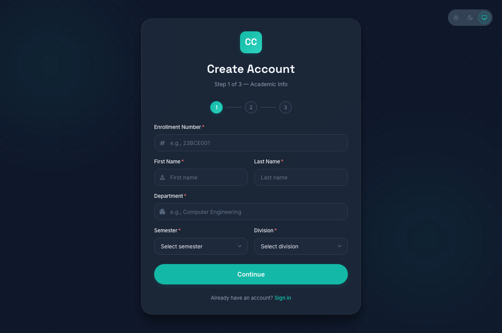
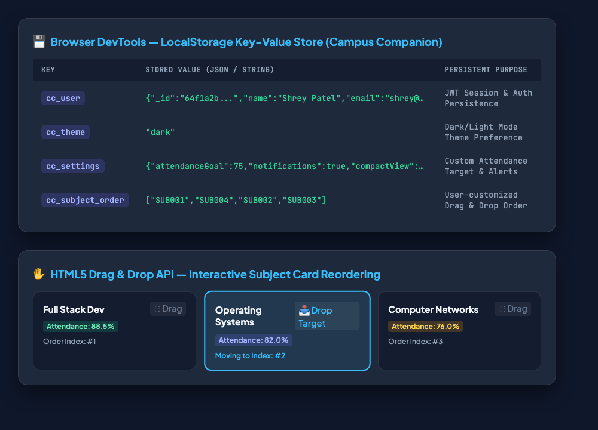

localStorage API for persistent client-side state.HTML5 introduces standard programmatic browser interfaces that bridge rich client-side hardware and state capabilities with web applications without third-party plugins.
The navigator.geolocation interface provides secure access to the client's physical location. navigator.geolocation.getCurrentPosition(successCallback, errorCallback, options) requests one-time user authorization. Upon permission grant, the Position object delivers coords.latitude and coords.longitude. In our Campus Companion registration and profile flow, these coordinates are sent to OpenStreetMap Nominatim reverse geocoding API to automatically autofill the student's campus location and city.
frontend/src/pages/RegisterPage/RegisterPage.jsx & frontend/src/pages/ProfilePage/ProfilePage.jsx// ═══ Task I: Geolocation API Implementation (frontend/src/pages/RegisterPage/RegisterPage.jsx) ═══
const handleGetLocation = () => {
if (!navigator.geolocation) {
setLocalError('Geolocation is not supported by your browser');
return;
}
setGeoLoading(true);
navigator.geolocation.getCurrentPosition(
async (position) => {
try {
const { latitude, longitude } = position.coords;
// Reverse geocode coordinates to human-readable address
const res = await fetch(
`https://nominatim.openstreetmap.org/reverse?lat=${latitude}&lon=${longitude}&format=json`
);
const data = await res.json();
const city = data.address?.city || data.address?.town || data.address?.state_district || 'Campus Area';
setFormData(prev => ({ ...prev, collegeName: `${city} Campus` }));
setGeoLoading(false);
} catch (err) {
setLocalError('Failed to fetch location address');
setGeoLoading(false);
}
},
(error) => {
setGeoLoading(false);
switch (error.code) {
case error.PERMISSION_DENIED:
setLocalError('Location permission denied by user');
break;
case error.POSITION_UNAVAILABLE:
setLocalError('Location information is unavailable');
break;
case error.TIMEOUT:
setLocalError('Location request timed out');
break;
}
},
{ enableHighAccuracy: true, timeout: 10000, maximumAge: 60000 }
);
};
The Window.localStorage interface provides synchronous, persistent key-value storage surviving browser restarts (up to 5–10MB per origin). Since LocalStorage only holds strings, JavaScript objects and arrays are serialized using JSON.stringify() during writes and deserialized using JSON.parse() upon initialization.
frontend/src/store/themeSlice.js & frontend/src/store/settingsSlice.js// ═══ Task II: Theme & Settings Local Storage Management (frontend/src/store/themeSlice.js) ═══
const getInitialTheme = () => {
const stored = localStorage.getItem('cc_theme');
if (stored) return stored;
return window.matchMedia('(prefers-color-scheme: dark)').matches ? 'dark' : 'light';
};
export const themeSlice = createSlice({
name: 'theme',
initialState: { mode: getInitialTheme() },
reducers: {
setTheme: (state, action) => {
state.mode = action.payload;
localStorage.setItem('cc_theme', action.payload); // Persist theme mode
},
toggleTheme: (state) => {
state.mode = state.mode === 'dark' ? 'light' : 'dark';
localStorage.setItem('cc_theme', state.mode); // Update storage key
}
}
});
// ═══ User Settings Persistence (frontend/src/store/settingsSlice.js) ═══
export const saveSettingsToStorage = (settings) => {
localStorage.setItem('cc_settings', JSON.stringify(settings));
};The HTML5 Drag and Drop API utilizes element attributes and event listeners: draggable="true", onDragStart (capturing source item index via e.dataTransfer.setData), onDragOver (invoking e.preventDefault() to permit drops), onDragLeave, and onDrop. In Campus Companion, reordering subject cards seamlessly updates both the in-memory React state and the persistent order key in localStorage.
frontend/src/pages/DashboardPage/DashboardPage.jsx// ═══ Task III: HTML5 Drag and Drop Handlers (frontend/src/pages/DashboardPage/DashboardPage.jsx) ═══
const handleDragStart = useCallback((e, index) => {
e.dataTransfer.setData('text/plain', index.toString());
e.dataTransfer.effectAllowed = 'move';
}, []);
const handleDragOver = useCallback((e, index) => {
e.preventDefault(); // Necessary to allow drop
e.dataTransfer.dropEffect = 'move';
setDragOverIndex(index);
}, []);
const handleDrop = useCallback((e, targetIndex) => {
e.preventDefault();
const sourceIndex = parseInt(e.dataTransfer.getData('text/plain'), 10);
if (isNaN(sourceIndex) || sourceIndex === targetIndex) return;
// Array splice reordering
const updated = [...subjectList];
const [movedItem] = updated.splice(sourceIndex, 1);
updated.splice(targetIndex, 0, movedItem);
setSubjectList(updated);
// Persist new layout order to LocalStorage
localStorage.setItem('cc_subject_order', JSON.stringify(updated.map(s => s._id)));
setDragOverIndex(null);
}, [subjectList]);
navigator.geolocation.getCurrentPosition() and integrated reverse geocoding into student onboarding.localStorage.setItem() and localStorage.getItem() across auth sessions, theme preferences, and dashboard configurations.draggable, dragstart, dragover, drop) to deliver fluid, user-customizable dashboard layouts in our Campus Companion web application.